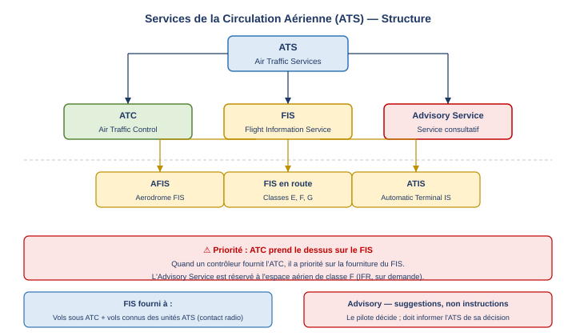

1. Flight Information Service (FIS)
1.1 Définition OACI
Le Flight Information Service (FIS) — service d'information de vol — est, selon l'Annexe 11 de l'OACI, un service fourni dans le but de donner des avis et des renseignements utiles à l'exécution sûre et efficace des vols.
1.2 Bénéficiaires du FIS
Le FIS est fourni à tous les aéronefs qui remplissent au moins l'une des deux conditions suivantes :
- Les aéronefs qui reçoivent un service du contrôle de la circulation aérienne (ATC) ;
- Les aéronefs autrement connus des unités des services de la circulation aérienne (ATS) compétentes, c'est-à-dire ceux qui évoluent en espace non contrôlé mais qui maintiennent un contact radio avec une unité ATS.
1.3 Priorité ATC sur FIS
Lorsqu'un organisme fournit à la fois l'ATC et le FIS, le service du contrôle de la circulation aérienne (ATC) a la priorité sur la fourniture du FIS. Autrement dit, si la charge de travail du contrôleur augmente, il peut réduire ou suspendre temporairement la fourniture du FIS pour se concentrer sur le contrôle.

2. Contenu du Flight Information Service
2.1 Informations météorologiques
Le FIS comprend obligatoirement les informations météorologiques suivantes :
SIGMET (Significant Meteorological Information)
Le SIGMET est une information émise par un bureau de veille météorologique (meteorological watch office) concernant la survenance ou l'occurrence probable de phénomènes météorologiques en route (phenomena) qui peuvent affecter la sécurité de l'exploitation des aéronefs. Il couvre les vols jusqu'à 60 000 ft.
Le contrôleur transmet le SIGMET au vol concerné dès réception ; le pilote décide de la conduite à tenir.
AIRMET (Airmen's Meteorological Information)
L'AIRMET couvre les mêmes types de phénomènes mais pour les vols à basse altitude, jusqu'à 24 000 ft (FL 240). Il traite des phénomènes non encore inclus dans les prévisions basse altitude émises pour la FIR ou sous-région concernée.
2.2 Autres informations du FIS
Au-delà des informations météorologiques, le FIS comprend des renseignements concernant :
- Risques de collision pour les aéronefs opérant dans les espaces aériens de classes E, F et G (espaces non contrôlés) ainsi que sur les aérodromes AFIS ;
- Conditions météorologiques aux aérodromes de départ, de destination et de dégagement (alternate) ;
- Activité volcanique (ash cloud, VOLMET…) ;
- Disponibilité des aides radio à la navigation : pannes radar, pannes radio-nav (VOR, NDB, ILS…) ;
- Aérodromes et infrastructures associées : état de la piste, balisage lumineux, taxiways, aire de trafic (apron)… ;
- Tout autre renseignement susceptible d'affecter la sécurité du vol.
3. AFIS — Aerodrome Flight Information Service
3.1 Définition et contexte
L'AFIS (Aerodrome Flight Information Service) est le service d'information de vol rendu sur un aérodrome sur lequel la fourniture du service du contrôle d'aérodrome (TWR) n'est pas justifiée, ou n'est pas justifiée en permanence (par exemple, un aérodrome contrôlé uniquement en journée qui devient AFIS la nuit).
L'aérodrome est alors qualifié d'aérodrome AFIS, par opposition aux aérodromes contrôlés, afin d'éviter toute confusion dans la phraséologie et les responsabilités.
3.2 Services fournis sur un aérodrome AFIS
L'opérateur AFIS (AFISO — Aerodrome Flight Information Service Officer) fournit uniquement :
- Le Flight Information Service : informations de circulation, météo, état de la piste… ;
- Le service d'alerte (Alerting Service).
Il ne fournit pas de service de contrôle. Il n'émet que des informations, jamais des autorisations (clearances) ou des instructions de contrôle.
4. ATIS — Automatic Terminal Information Service
4.1 Définition et objectif
L'ATIS (Automatic Terminal Information Service) — service automatique d'information de région terminale — est une composante du FIS qui consiste en la diffusion continue et répétitive d'informations météorologiques et opérationnelles essentielles à destination des aéronefs en approche et au départ.
4.2 Voice-ATIS
Le Voice-ATIS obéit aux règles suivantes :
- Il est diffusé en continu (broadcast continu et répétitif) ;
- Il utilise une fréquence VHF discrète (possible également sur la fréquence VOR collocalisé) ;
- Chaque message est identifié par une lettre de l'alphabet OACI (Alpha, Bravo, Charlie…) ;
- L'information est mise à jour immédiatement dès qu'un élément change (changement de QNH, de piste en service, etc.) ;
- Un seul aérodrome par message ATIS ;
- La durée du message ne doit pas dépasser 30 secondes (dans la mesure du possible) ;
- À l'établissement du contact initial avec l'ATS, le pilote doit accuser réception en citant la lettre d'information reçue ; le QNH doit être repassé en read-back.
4.3 Contenu du message ATIS
Le message Voice-ATIS contient les éléments suivants, dans l'ordre :
- Nom de l'aérodrome ;
- Indicateur arrivée et/ou départ (arrival / departure indicator) ;
- Heure d'observation ;
- Type d'approche attendue (si arrivée) ;
- Piste en service (runway in use) ;
- État de la surface de la piste (braking action si applicable) ;
- Niveau de transition (transition level — TL) ;
- Autres informations opérationnelles essentielles ;
- Vent de surface — moyenne sur 2 minutes ;
- Visibilité et RVR (Runway Visual Range — portée visuelle de piste) si applicable — moyenne sur 1 minute ;
- Temps présent (present weather) ;
- Nuages inférieurs à 5 000 ft ou à la plus haute altitude minimale de secteur, cumulonimbus ;
- Température de l'air et température du point de rosée (dew point) ;
- Calage altimétrique (altimeter setting — QNH) ;
- Phénomènes météorologiques significatifs en zones d'approche et de montée initiale, y compris le wind shear ;
- Prévision de tendance (trend forecast) si disponible.
4.4 Exemple réel — ATIS Bordeaux Mérignac
Voici comment se lit un message ATIS réel, en suivant la séquence normalisée. Les éléments en rouge dans le document source correspondent aux items obligatoires :
Approche : ILS RWY 23 | Piste en service : 23 | Piste 29 : fermée (travaux)
État piste : wet, braking action good | TL : 60
Vent : 290°/4 kt max 10 kt | Visibilité : 9 km
Nuages : FEW 1 500 ft, BKN 4 600 ft | Temp : 10°C | QNH : 1022
Tendance : NOSIG
→ Le pilote doit accuser réception de la lettre F et répéter le QNH 1022 au premier contact.
4.5 D-ATIS (Digital ATIS)
Le D-ATIS (Digital ATIS) est la version numérique de l'ATIS. Les mêmes informations que le Voice-ATIS sont transmises à bord via une liaison de données (datalink), typiquement par le réseau ACARS (Aircraft Communications Addressing and Reporting System — système de communication numérique avion/sol) et s'affichent sur les MCDU (Multipurpose Control Display Unit — unité d'affichage et de contrôle multifonctions). La plupart des grands aérodromes proposent les deux formats simultanément.
5. Paramètres FIS d'aérodrome
Lorsque le FIS est fourni depuis un aérodrome (y compris AFIS), les paramètres minimaux transmis sont les suivants :
- Runway in use — piste en service ;
- Wind — vent de surface ;
- Visibility — visibilité ;
- Ceiling — plafond (si applicable) ;
- Temperature — température (si applicable) ;
- QNH / QFE — calages altimétriques ;
- Transition level (TL) — niveau de transition (si applicable).
6. Air Traffic Advisory Service
6.1 Définition et espace aérien concerné
Le service consultatif de la circulation aérienne (Air Traffic Advisory Service) est un service fourni dans les espaces aériens consultatifs (advisory airspace) à destination des vols IFR circulant sur des routes consultatives ou dans des espaces consultatifs — c'est-à-dire les espaces de classe F.
6.2 Objectif
L'objectif du service consultatif est de rendre l'information sur les risques de collision plus efficace qu'elle ne le serait avec le seul FIS. Il se situe donc à un niveau d'assistance intermédiaire entre le FIS et l'ATC : il ne sépare pas, mais informe de manière plus proactive.
6.3 Nature des messages : suggestions, non instructions
Une distinction fondamentale sépare l'ATC de l'Advisory Service : les messages de l'Advisory Service constituent des suggestions (non des instructions ni des clearances). Concrètement :
- L'ATS suggère une action d'évitement possible au pilote IFR ;
- Le pilote décide librement de suivre ou non la suggestion ;
- Le pilote informe l'ATS sans délai de sa décision (acceptation ou refus).
6.4 Classe F — règles détaillées
En espace aérien de classe F, les règles de service sont les suivantes :
- Les vols IFR et VFR sont autorisés ;
- Les vols IFR reçoivent le service consultatif sur demande, ainsi que le FIS et l'alerting service ;
- Les vols VFR reçoivent le FIS et l'alerting service si contact radio ;
- Pour bénéficier du service consultatif, un vol IFR doit déposer un plan de vol ;
- Les aéronefs qui ne souhaitent pas le service consultatif doivent tout de même notifier à l'ATS les modifications de leur plan de vol.
6.5 Exemples de classe F dans le monde
La classe F est peu utilisée en Europe continentale mais existe dans d'autres États. Deux exemples illustrent des interprétations nationales différentes :